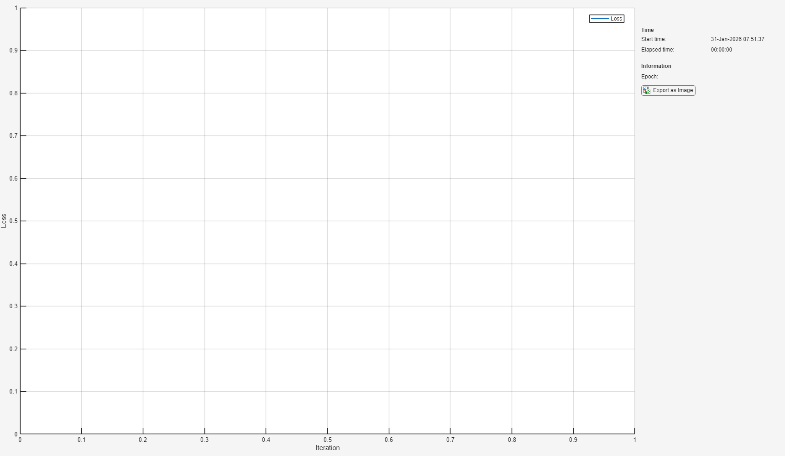
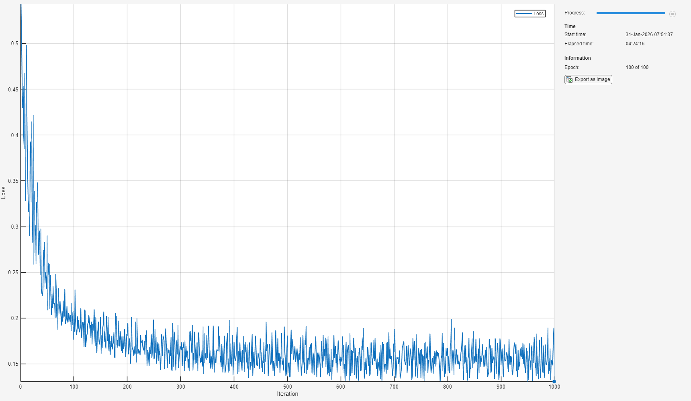
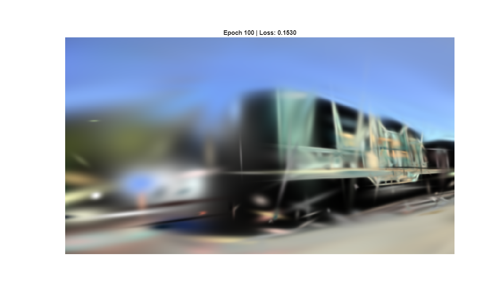
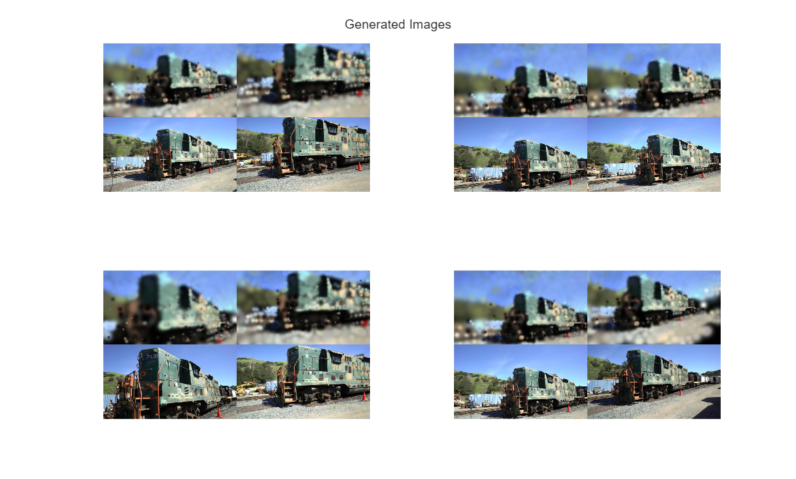

Train 3D Gaussian Splatting(3DGS)
This example shows how-to train and generate 2D images using a minimal implementation of 3D Gaussian splatting.
Contents
Load Data
Specify the folder containing the SFM generated sparse 3d pointcloud as input, generated in COLMAP format. Download example dataset from https://https://repo-sam.inria.fr/fungraph/3d-gaussian-splatting/datasets/input/tandt_db.zip.
datasetPath = 'C:\Source\tandt_db\tandt\train'; % Update this path numGaussians = 1000; % more gaussians creates sharper images, but needs more memory and has longer training time numImages = 20;
Define Learnable Parameters
Construct object and to load data and create learnable parameters
obj = GaussianSplatter(datasetPath, numGaussians, numImages);
Loading COLMAP data from C:\Source\tandt_db\tandt\train\sparse\0... Loading cameras... Loading images... Loading 3D points... Loaded: 1 cameras, 301 images, 182686 points3D Processing metadata... Initializing Gaussians...
Specify Training Options
Train for 50 epochs with a mini-batch size of 1.
miniBatchSize = 2; numEpochs = ceil(numGaussians/20);
Specify the options for Adam optimization:
learnRate = 0.01; learnInterval = ceil(numEpochs/5); gradDecay = 1 - miniBatchSize/numImages; sqGradDecay = 0.999;
Train Model
Train the 3D Gaussian splat model using a custom training loop.
Training the model is a computationally expensive process that can take hours. To save time while running this example, load a pretrained network by setting doTraining to false. To train the network yourself, set doTraining to true.
doTraining = true;
Create a minibatchqueue object that processes and manages mini-batches of images and camera data during training.
ds = combine(obj.data.images, obj.data.cameras); % Combined datastore mbq = minibatchqueue(ds,'MiniBatchSize',miniBatchSize, ... 'PartialMiniBatch','discard','OutputEnvironment','auto',... 'MiniBatchFor',["SSCB","B","B","B","B","B","B","B","SSB","SB","SB"]);
Adaptive densification
enableAdaptiveDensification = true; densifyInterval = ceil(numEpochs/25); prunningRatio = 0.05;
Initialize the parameters for Adam optimization.
avgGrad = []; avgSqGrad = [];
Calculate the total number of iterations for the training progress monitor
numIterationsPerEpoch = ceil(numImages/miniBatchSize); numIterations = numEpochs * numIterationsPerEpoch;
Initialize the training progress monitor
if doTraining monitor = trainingProgressMonitor('Metrics',"Loss",'Info',"Epoch",'XLabel',"Iteration"); end
Initialize the preview render
imageIdxToShow = preview(obj.data.cameras);
imageIdxToShow = imageIdxToShow{1};
Train the model using a custom training loop. For each epoch, shuffle the images and camera data and loop over mini-batches. At the end of each iteration, display the training progress.
if doTraining iteration = 0; epoch = 0; while epoch < numEpochs && ~monitor.Stop epoch = epoch + 1; % Shuffle data shuffle(mbq); while hasdata(mbq) && ~monitor.Stop iteration = iteration + 1; % Fetch Data [obj.image_gt,obj.camera.id,obj.camera.width,obj.camera.height,... obj.camera.fx,obj.camera.fy,obj.camera.cx,obj.camera.cy,.... obj.camera.Rcw,obj.camera.tcw,obj.camera.twc] = next(mbq); if (iteration == 1) % Initialize storage and move to GPU if input is on GPU obj.initStorage(miniBatchSize); end % Optimization Step [loss,grads] = dlfeval(@obj.modelStep,obj.params); % Update Weights [obj.params,avgGrad,avgSqGrad] = adamupdate(obj.params,grads,avgGrad,avgSqGrad,iteration,learnRate,gradDecay,sqGradDecay); % Extract Loss Value loss = extractdata(loss); % Update the training progress monitor recordMetrics(monitor,iteration,Loss=loss); updateInfo(monitor,Epoch=epoch + " of " + numEpochs); monitor.Progress = 100 * iteration/numIterations; % Visualization idx = find(extractdata(obj.camera.id) == imageIdxToShow); if ~isempty(idx) figure(1); imshow(extractdata(obj.image(:,:,:,idx))); title(sprintf('Epoch %d | Loss: %.4f', epoch, loss)); drawnow; end end % Adaptive densification if enableAdaptiveDensification && mod(epoch, densifyInterval) == 0 && epoch > 1 && epoch < numEpochs obj.pruneAndDensify(avgGrad,prunningRatio); end % Decrease learning rate if mod(epoch, learnInterval) == 0 && epoch > 1 && epoch < numEpochs learnRate = 0.5*learnRate; end end % Save params obj.saveGaussians("gaussians.mat"); end
More arrays to GPU environment... Densification: 50 clones, 0 splits. Densification: 5 clones, 45 splits. Densification: 5 clones, 45 splits. Densification: 4 clones, 46 splits. Densification: 15 clones, 33 splits. Densification: 18 clones, 29 splits. Densification: 24 clones, 20 splits. Densification: 23 clones, 20 splits. Densification: 22 clones, 20 splits. Densification: 28 clones, 13 splits. Densification: 23 clones, 13 splits. Densification: 13 clones, 15 splits. Densification: 13 clones, 12 splits. Densification: 17 clones, 6 splits. Densification: 17 clones, 8 splits. Densification: 8 clones, 6 splits. Densification: 16 clones, 13 splits. Densification: 12 clones, 5 splits. Densification: 19 clones, 5 splits. Densification: 17 clones, 6 splits. Densification: 17 clones, 5 splits. Densification: 17 clones, 3 splits. Densification: 14 clones, 4 splits. Densification: 11 clones, 4 splits. 
Preview Results
figure(2); numGenImages = 8; load("gaussians.mat"); shuffle(mbq) for iteration = 1:ceil(numGenImages/miniBatchSize) [obj.image_gt,obj.camera.id,obj.camera.width,obj.camera.height,... obj.camera.fx,obj.camera.fy,obj.camera.cx,obj.camera.cy,.... obj.camera.Rcw,obj.camera.tcw,obj.camera.twc] = next(mbq); if (iteration == 1) && isempty(obj.image) obj.initStorage(miniBatchSize); end obj.createImage(params); genImages = cat(4,gather(extractdata(obj.image)),gather(extractdata(obj.image_gt))); subplot(2,2,iteration); imshow(imtile(genImages)) end sgtitle("Generated Images")